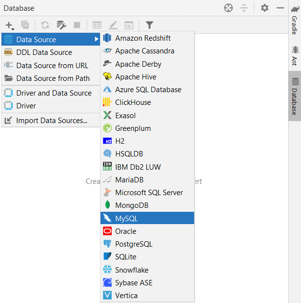
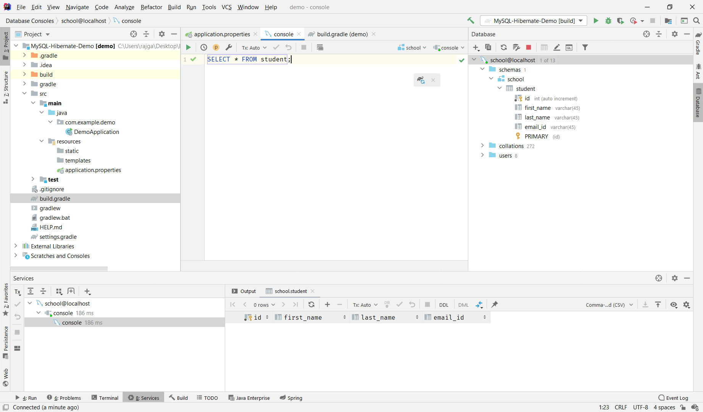
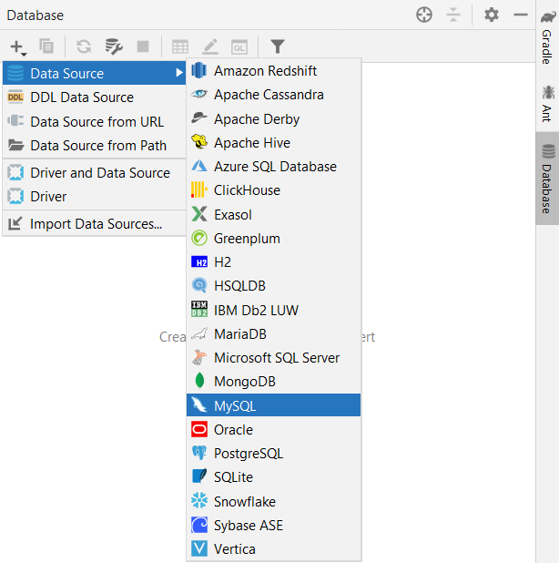
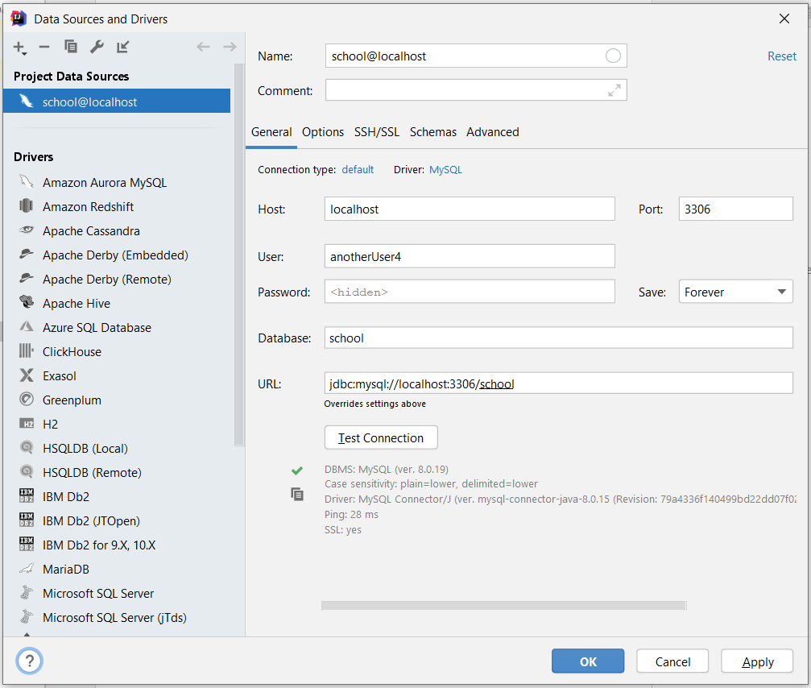
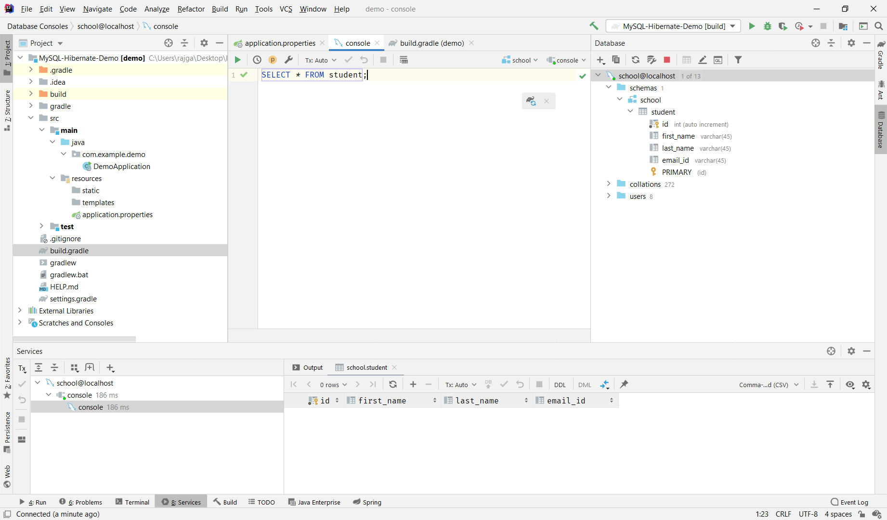
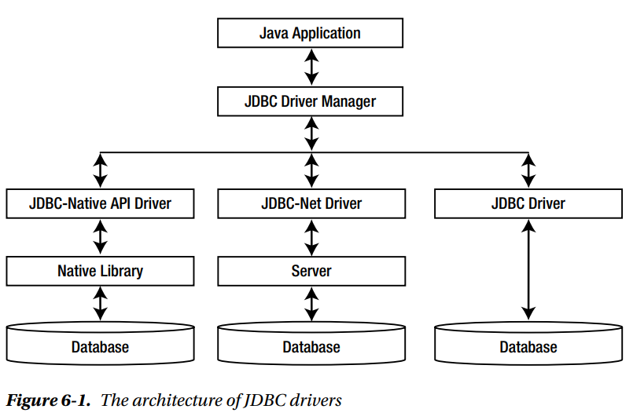
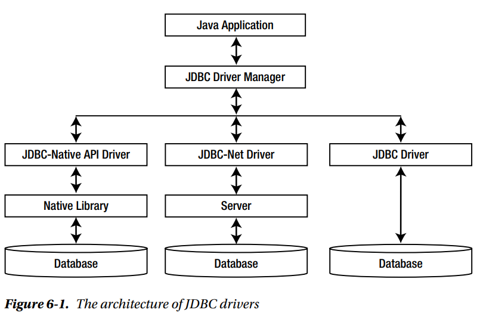
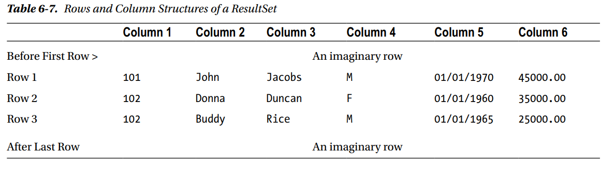
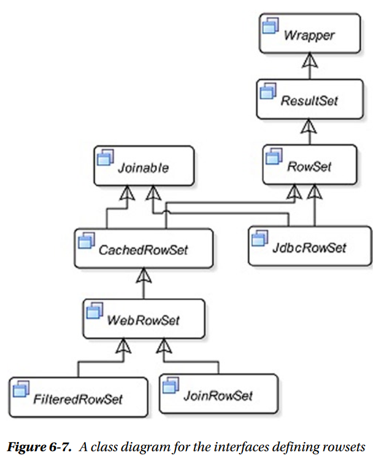

This page contains my notes from the following books:
a) Hibernate in Action
b) High-Performance Java Persistence
c) Beginning Java 8 APIs, Extensions and Libraries - Kishori Sharan
a) Hibernate in Action
b) High-Performance Java Persistence
c) Beginning Java 8 APIs, Extensions and Libraries - Kishori Sharan
Index:
Chapter 0: Getting Started - Dummy Project
Chapter 6: JDBC API (Kishori Sharan)
Chapter 1: JDBC and DB Essentials: Performance and Scaling (Vlad Mihalcea)
Chapter 4: Mapping Persistent Classes
Chapter 0: Getting Started - Dummy Project
- Refer this Spring guide for details.
- Hibernate User Guide can be found here.
- Entire code can be found on GitHub here.
- On Initializr create a new Gradle project with the following dependencies: Spring Data JPA, MySQL Driver, Spring Web.
- Remove the
- Spring Boot gives you defaults on all things. For example, the default database is H2. Consequently, when you want to use any other database, you must define the connection attributes in the
- For this, we would first have to separately create a new database in MySQL. We are also creating a new table. Alternatively, you can just create the database and have Hibernate create the table for you. We will see how to do it.
- Optional, but you can add the database that you just created as a datasource to IntelliJ itself so that you
can run SQL queries from the IDE and not have to go to WorkBench everytime.
Step 1: Select the Database tab on the right and add a datasource by clicking the plus symbol. 
Step 2: Add User, Password, Database. For your user/password combination of database, go to your MySQL WorkBench. Go to home, there you will see the MySQL connections. One of the existing connections is your user/password combination for this that you will enter in your IDE. Click on Test Connection. If everything was set-up correctly, you should see a similar message as below. Note the URL, we will be making use of it.
Step 3: Now you can run SQL commands directly in the IDE and see the output in the window below. 
- Moving on, we now need to add the following to the
Note the
a)
b)
c)
d)
You must begin with either
- Next we create the Entity model.
- Note how we are generating the Primary Key. It's different from the way described in the docs.
- Next we create the
- Lastly we need to create a Controller to handle HTTP requests to our application.
What is REST
REST and HTTP
Restful Service Constraints
Designing RESTful APIs
What is
- Hibernate User Guide can be found here.
- Entire code can be found on GitHub here.
- On Initializr create a new Gradle project with the following dependencies: Spring Data JPA, MySQL Driver, Spring Web.
- Remove the
sourceCompatibility = '11' from build.gradle file if giving build errors.
- Spring Boot gives you defaults on all things. For example, the default database is H2. Consequently, when you want to use any other database, you must define the connection attributes in the
application.properties file. - For this, we would first have to separately create a new database in MySQL. We are also creating a new table. Alternatively, you can just create the database and have Hibernate create the table for you. We will see how to do it.
Expand Gist 
Step 1: Select the Database tab on the right and add a datasource by clicking the plus symbol. 
Step 2: Add User, Password, Database. For your user/password combination of database, go to your MySQL WorkBench. Go to home, there you will see the MySQL connections. One of the existing connections is your user/password combination for this that you will enter in your IDE. Click on Test Connection. If everything was set-up correctly, you should see a similar message as below. Note the URL, we will be making use of it.

Step 3: Now you can run SQL commands directly in the IDE and see the output in the window below. 
- Moving on, we now need to add the following to the
application.properties file
Expand Gist
spring.jpa.hibernate.ddl-auto=none property above. a)
none: The default for MySQL. No change is made to the database structure. b)
update: Hibernate changes the database according to the given entity structures. c)
create: Creates the database every time but does not drop it on close. d)
create-drop: Creates the database and drops it when SessionFactory closes. You must begin with either
create or update, because you do not yet have the database
structure. After the first run, you can switch it to update or none, according to
program requirements. Use update when you want to make some change to the database structure.
The default for H2 and other embedded databases is create-drop. For other databases, such as MySQL,
the default is none. Since we have already created the table, we leave this as none.
- Next we create the Entity model.
- Note how we are generating the Primary Key. It's different from the way described in the docs.
GenerationType.SEQUENCE
is the preferred way of generating IDs in Hibernate. But MySQL does
not support sequences. Hence we are doing it this way.
This SO Link goes into why we are using it this
way. Also this
Thorben link explains in more details why we are using the native generator instead.
Expand Gist
StudentRepository
Expand Gist
Expand Gist
- Source
to in 28 mins from where the text is taken
- Source to Spring REST Tutorial Doc that contains the code for creating a REST-ful API
- First of all, REST does not define a standard message exchange format. You can build REST services with both XML and JSON. However, JSON is a more popular format with REST. So, if it does not define a standard message exchange format, what is REST then? REST stands for REpresentational State Transfer. Key abstraction in REST is a Resource. There is no restriction on what can be a resource. A todo is a resource. A person on facebook is a resource.
- A resource has an URI (Uniform Resource Identifier):
/user/Ranga/todos/1
/person/Ranga
- A resource will have representations: XML, HTML, JSON.
- A resource will have state. The representation of a resource should capture its current state. When a resource is requested, we provide the representation of the resource.
- Source to Spring REST Tutorial Doc that contains the code for creating a REST-ful API
- First of all, REST does not define a standard message exchange format. You can build REST services with both XML and JSON. However, JSON is a more popular format with REST. So, if it does not define a standard message exchange format, what is REST then? REST stands for REpresentational State Transfer. Key abstraction in REST is a Resource. There is no restriction on what can be a resource. A todo is a resource. A person on facebook is a resource.
- A resource has an URI (Uniform Resource Identifier):
/user/Ranga/todos/1
/person/Ranga
- A resource will have representations: XML, HTML, JSON.
- A resource will have state. The representation of a resource should capture its current state. When a resource is requested, we provide the representation of the resource.
- REST builds on top of HTTP (Hypertext Transfer Protocol). HTTP is the language of the web.
- HTTP has a few important verbs:
POST- Create a new resourceGET- Read a resourcePUT- Update an existing resourceDELETE- Delete a resource
- 200 - SUCESS
- 404 - RESOURCE NOT FOUND
- 400 - BAD REQUEST
- 201 - CREATED
- 401 - UNAUTHORIZED
- 415 - UNSUPPORTED TYPE - Representation not supported for the resource
- 500 - SERVER ERROR
a) Client - Server : There should be a service producer and a service consumer.
b) The interface (URL) is uniform and exposing resources. Interface uses nouns (not actions)
c) The service is stateless. Even if the service is called 10 times, the result must be the same.
d) The service result should be Cacheable. HTTP cache, for example.
e) Service should assume a Layered architecture. Client should not assume direct connection to server - it might be getting info from a middle layer - cache.
b) The interface (URL) is uniform and exposing resources. Interface uses nouns (not actions)
c) The service is stateless. Even if the service is called 10 times, the result must be the same.
d) The service result should be Cacheable. HTTP cache, for example.
e) Service should assume a Layered architecture. Client should not assume direct connection to server - it might be getting info from a middle layer - cache.
- Following are the important things to consider when designing RESTful API's:
a) In Rest, we think Nouns (resources) and NOT Verbs (NOT actions). So, URI's should represent resources. URI's should be hierarchical and as self descriptive as possible. Prefer plurals.
b) Always use HTTP Methods.
c)
d)
e)
f)
a) In Rest, we think Nouns (resources) and NOT Verbs (NOT actions). So, URI's should represent resources. URI's should be hierarchical and as self descriptive as possible. Prefer plurals.
b) Always use HTTP Methods.
c)
GET : Should not update anything. Should be idempotent (same result in multiple calls).
Possible Return Codes 200 (OK) + 404 (NOT FOUND) + 400 (BAD REQUEST) d)
POST : Should create new resource. Ideally return JSON with link to newly created resource.
Same return codes as get possible. In addition : Return code 201 (CREATED) is possible. e)
PUT : Update a known resource. ex: update client details. Possible Return Codes : 200(OK)
f)
DELETE : Used to delete a resource. ResponseEntity and what is it used for
-
Chapter 4: JDBC API
- Oracle JDBC Reference link
- Check this Balus C link as well
-
Scrollability: Scrollability determines the ability of the ResultSet to scroll through the rows.
By default, a
- You can also create a
- The following three constants in the ResultSet interface are used to specify the scrollability of a ResultSet:
a)
b)
c)
Concurrency: Concurrency refers to its ability of the
- The following two constants in the ResultSet interface are used to specify the concurrency of a ResultSet:
a)
b)
Holdability: Holdability refers to the state of the
- The holdability of a
a)
b)
- For an OracleDB, you can check these values by running this code. The own****AreVisible shows whether inserts/updates/deletes using the same ResultSet are visible within that ResultSet itself. Read more at this SO Link.
- Check this Balus C link as well
-
What is the JDBC API?
- The JDBC API provides a standard database-independent interface to interact with any tabular data
source. Goal is to interact with databases using a Java program where the Java program does not need to know
what kind of database is installed/the program has to talk to.
- Using the JDBC API to access data in a database hides the implementation differences that exist in different types of databases. It achieves database transparency by defining most of its API using interfaces and letting the database vendors (or any third-party vendors) provide the implementations for those interfaces. The collection of the implementation classes that is supplied by a vendor to interact with a specific database is called a JDBC Driver
- Some JDBC drivers are written in pure Java. For purely Java-implemented JDBC drivers, you just need to include the vendor-supplied classes in your application CLASSPATH. Some JDBC drivers need a proprietary software installation on the client machine to interact with a database.
- There are different kinds of JDBC Drivers:  - We are going to only use JDBC Drivers. The JDBC driver is also known as a direct-to-database pure Java driver. It is written in pure Java. It converts the JDBC calls into DBMS-specific calls and sends the calls directly to the database. It is the best suitable driver type to be used in apps. All you need to do is to include the driver JAR/ZIP files with your application. All major DBMS vendors supply this type of JDBC driver.
- Using the JDBC API to access data in a database hides the implementation differences that exist in different types of databases. It achieves database transparency by defining most of its API using interfaces and letting the database vendors (or any third-party vendors) provide the implementations for those interfaces. The collection of the implementation classes that is supplied by a vendor to interact with a specific database is called a JDBC Driver
- Some JDBC drivers are written in pure Java. For purely Java-implemented JDBC drivers, you just need to include the vendor-supplied classes in your application CLASSPATH. Some JDBC drivers need a proprietary software installation on the client machine to interact with a database.
- There are different kinds of JDBC Drivers:  - We are going to only use JDBC Drivers. The JDBC driver is also known as a direct-to-database pure Java driver. It is written in pure Java. It converts the JDBC calls into DBMS-specific calls and sends the calls directly to the database. It is the best suitable driver type to be used in apps. All you need to do is to include the driver JAR/ZIP files with your application. All major DBMS vendors supply this type of JDBC driver.
Connecting to a DB
- Dummy project for setting up project is present here on my
GitHub.
- Once you have obtained the JDBC Driver from the Oracle/Maven repository, you need to register the JDBC Driver with your application. A JDBC Driver is a class that implements the
- You need to register this JDBC Driver with the
- When you need to establish a connection to a database, you must pass a connection URL to the
- There are 3 ways to register a JDBC Driver with the
a) By setting the
b) By loading the driver class into the JVM
c) By using the
- Once you have obtained the JDBC Driver from the Oracle/Maven repository, you need to register the JDBC Driver with your application. A JDBC Driver is a class that implements the
java.sql.Driver
interface. DBMS vendors supply the JDBC driver class along with any other classes it uses. - You need to register this JDBC Driver with the
java.sql.DriverManager class. (Refer pg 396 of
book if confused). You can register multiple JDBC Drivers with the DriverManager. - When you need to establish a connection to a database, you must pass a connection URL to the
DriverManager.
The DriverManager passes the
connection URL to all registered drivers one by one, and asks them to connect to the database using
information
that you supply in the connection URL. If a driver recognizes the connection URL, it connects to the
database and
returns the connection to the DriverManager. An object of the java.sql.Connection
interface represents a database
connection in a Java program. If none of the registered drivers recognize a connection URL, the DriverManager
will
throw a SQLException stating that it could not find a suitable driver - There are 3 ways to register a JDBC Driver with the
DriverManger class: a) By setting the
jdbc.drivers system property b) By loading the driver class into the JVM
c) By using the
registerDriver() method of the DriverManager class Constructing a Connection URL
- A database connection is established using a connection URL. The format of a connection URL is dependent
upon the DBMS and a JDBC driver.
- The syntax to define the Connection URL is:
- For OracleDB it is:
- The syntax to define the Connection URL is:
<protocol>:<sub-protocol>:<data-source-details>, The
<protocol> part is always set to jdbc. The <sub-protocol> part is
vendor-specific. The <data-source-details> part is DBMS specific that is used to locate
the database.
In some cases, you can also specify some connection properties in this last part of the URL. - For OracleDB it is:
jdbc:oracle:thin:hr/hr@//localhost:1521/orclpdb. The protocol part is
jdbc. The sub-protocol part is oracle:thin, which identifies the Oracle Corporation as the vendor, and the
type of the driver it will use, which is thin. The data source details part is @localhost:1521/orclpdb. It
has three subparts. The @localhost identifies the server name. You could use an IP address or a machine name
of your Oracle database server instead. Then, it contains the port number at which Oracle's Transport
Network Substrate (TNS) listener is running. The last part is an Oracle's instance name, which is
orclpdb in this example. Note that the above example uses a Service Name to connect to the DB instead of a
SID. Hence the Connection URL is formatted differently. Refer
this
SO Link
to read what is different and how it is formatted.
Establishing the DB Connection
- You need to use the
- The Connection interface inherits from the
- When you are done with a database connection, you need to close it by using the
- View the entire code here.
getConnection() static method of the DriverManager class
to establish a connection to a database. It returns an object of the java.sql.Connection
interface, which represents the database connection. The getConnection() method takes a
connection URL, a user id, a password, and any number of name-value pairs using a
java.util.Properties object. The getConnection() method is overloaded. - The Connection interface inherits from the
java.lang.AutoCloseable interface. That means you
can also use a try-with-resources block to obtain a Connection that will be automatically
closed when the control exits the try block. - When you are done with a database connection, you need to close it by using the
close()
method of the Connection object.
- View the entire code here.
Expand Gist
Setting the Auto-Commit Mode
- When you connect to a database, the auto-commit property for the
- If you have enabled the auto-commit mode for your connection, you cannot use its
Connection() object is set
to true by default. If a connection is in an auto-commit mode, a SQL statement is committed automatically
after its successful execution. If a connection is not in an auto-commit mode, you must call the commit()
or rollback() method of the Connection() object to commit or rollback a
transaction. Typically, you disable the auto-commit mode for a connection in a JDBC application, so your
application logic controls the final outcome of the transaction. To disable the auto-commit mode,
you need to call the setAutoCommit(false) on the Connection() object after
connection has been established (like we have done above). - If you have enabled the auto-commit mode for your connection, you cannot use its
commit() and
rollback() methods. Calling the commit() and rollback() methods on a
Connection object, which has enabled the auto-commit mode, throws an exception. JDBC also lets
you use save points in a transaction, so that you can apply a partial rollback to a transaction. Transaction Isolation Level
- In a multi-user database, you will often come across the following two terms:
a) Data concurrency: Data concurrency refers to the ability of multiple users to use the same data concurrently.
b) Data consistency: Data consistency refers to the accuracy of the data that is maintained when multiple users are manipulating the data concurrently.
- As the data concurrency increases (i.e. more users work on the same data), care must be taken to maintain a desired level of data consistency. A database maintains data consistency using locks and by isolating one transaction from another. How much a transaction is isolated from another transaction depends on the desired level of data consistency.
- There are three phenomena where data consistency may be compromised in a multi-user environment where multiple concurrent transactions are supported:
a) Dirty Read: In a dirty read, a transaction reads uncommitted data from another transaction. Consider the following sequence of steps, which results in inconsistent data because of a dirty read:Transaction A inserts a new row in a table and it has not committed it yet.
Transaction B reads the uncommitted row inserted by the transaction A.
Transaction A rollbacks the changes.
At this point, transaction B is left with data for a row that does not exist.
b) Non-Repeatable Read: In a non-repeatable read, when a transaction re-reads the data, it finds that the data has been modified by another transaction that has been already committed. Consider the following sequence of steps, which results in inconsistent data because of a non-repeatable read:Transaction A reads a row.
Transaction B modifies or deletes the same row and commits the changes.
Transaction A re-reads the same row and finds that the row has been modified or deleted.
c) Phantom Read: In a phantom read, when a transaction re-executes the same query, it finds more data that satisfies the query. Consider the following sequence of steps, which results in inconsistent data, because of a phantom read:Transaction A executes a query (say Q) and finds X number of rows matching the query
Transaction B inserts some rows that satisfy the query Q criteria and commits.
Transaction A re-executes the same query (Q) and finds Y number of rows (Y > X) matching the query.
- SO Link explaining the difference between Non-Repeatable Read and Phantom Read. (Basically: A non-repeatable read occurs, when during the course of a transaction, a row is retrieved twice and the values within the row differ between reads. A phantom read occurs when, in the course of a transaction, two identical queries are executed, and the collection of rows returned by the second query is different from the first. So, while the Non-Repeatable Read applies to a single row, the Phantom Read is about a range of records which satisfy a given query filtering criteria.)
- The ANSI SQL-92 standard defines four transaction isolation levels in terms of the above-described three situations for data consistency. Each isolation level defines what kinds of data inconsistencies are allowed, or not allowed. The four transaction isolation levels and their correspondiYou can check the updated value by runningng constants in Java are as follows:Read Uncommitted (
Read Committed (
Repeatable Read (
Serializable (
- The below table shows the four isolation levels and the three permitted situations. It is up to a DBMS to decide how they implement these isolation levels.
- Even if the SQL standard mandates the use of the
- This link from Vlad's blog explains the isolation levels. This SO Link explains the difference between
a) Data concurrency: Data concurrency refers to the ability of multiple users to use the same data concurrently.
b) Data consistency: Data consistency refers to the accuracy of the data that is maintained when multiple users are manipulating the data concurrently.
- As the data concurrency increases (i.e. more users work on the same data), care must be taken to maintain a desired level of data consistency. A database maintains data consistency using locks and by isolating one transaction from another. How much a transaction is isolated from another transaction depends on the desired level of data consistency.
- There are three phenomena where data consistency may be compromised in a multi-user environment where multiple concurrent transactions are supported:
a) Dirty Read: In a dirty read, a transaction reads uncommitted data from another transaction. Consider the following sequence of steps, which results in inconsistent data because of a dirty read:
b) Non-Repeatable Read: In a non-repeatable read, when a transaction re-reads the data, it finds that the data has been modified by another transaction that has been already committed. Consider the following sequence of steps, which results in inconsistent data because of a non-repeatable read:
c) Phantom Read: In a phantom read, when a transaction re-executes the same query, it finds more data that satisfies the query. Consider the following sequence of steps, which results in inconsistent data, because of a phantom read:
- SO Link explaining the difference between Non-Repeatable Read and Phantom Read. (Basically: A non-repeatable read occurs, when during the course of a transaction, a row is retrieved twice and the values within the row differ between reads. A phantom read occurs when, in the course of a transaction, two identical queries are executed, and the collection of rows returned by the second query is different from the first. So, while the Non-Repeatable Read applies to a single row, the Phantom Read is about a range of records which satisfy a given query filtering criteria.)
- The ANSI SQL-92 standard defines four transaction isolation levels in terms of the above-described three situations for data consistency. Each isolation level defines what kinds of data inconsistencies are allowed, or not allowed. The four transaction isolation levels and their correspondiYou can check the updated value by runningng constants in Java are as follows:
TRANSACTION_READ_UNCOMMITTED)TRANSACTION_READ_COMMITTED)TRANSACTION_REPEATABLE_READ)TRANSACTION_SERIALIZABLE)- The below table shows the four isolation levels and the three permitted situations. It is up to a DBMS to decide how they implement these isolation levels.
| Isolation Level | Dirty Read | Non-Repeatable Read | Phantom Read |
|---|---|---|---|
| Read Uncommitted | Permitted | Permitted | Permitted |
| Read Committed | Not Permitted | Permitted | Permitted |
| Repeatable Read | Not Permitted | Not Permitted | Permitted |
| Serializable | Not Permitted | Not Permitted | Not Permitted |
TRANSACTION_SERIALIZABLE isolation level,
most database management systems use a different default level. Oracle, for example, has a default isolation
level of TRANSACTION_READ_COMMITTED (Source). - This link from Vlad's blog explains the isolation levels. This SO Link explains the difference between
TRANSACTION_READ_COMMITTED and TRANSACTION_REPEATABLE_READ.
JDBC-Types-to-Java-Types Mapping
- The JDBC API allows you to access and manipulate data stored in a database in a Java environment. The
database uses its own data types, whereas Java uses its own. We use three sets of methods while
working with data in JDBC programs: getXxx(), setXxx(), and updateXxx(), where Xxx indicates a data type
such as int, String, Date, etc. These methods are found in many interfaces such as PreparedStatement,
ResultSet.
- A getXxx() method is used to read data from a JDBC environment to a Java program. A setXxx() method is used to set a value in a Java program that will finally be passed to a JDBC environment. An updateXxx() method is used to update a data element that was retrieved from a JDBC environment and the updated value will be passed again to a JDBC environment.
- A getXxx() method is used to read data from a JDBC environment to a Java program. A setXxx() method is used to set a value in a Java program that will finally be passed to a JDBC environment. An updateXxx() method is used to update a data element that was retrieved from a JDBC environment and the updated value will be passed again to a JDBC environment.
Executing SQL Statements
- Based on the type of work that a SQL statement performs in a DBMS, it can be categorized as follows:
a) Data Definition Language (DDL) Statement: Examples are
b) Data Manipulation Language (DML) Statement:
c) Data Control Language (DCL) Statement:
d) Transaction Control Language (TCL) Statement:
- An instance of the
a)
b)
c)
- The
a) Data Definition Language (DDL) Statement: Examples are
CREATE TABLE,
ALTER TABLE. b) Data Manipulation Language (DML) Statement:
SELECT, INSERT, UPDATE,
DELETE c) Data Control Language (DCL) Statement:
GRANT, REVOKE d) Transaction Control Language (TCL) Statement:
COMMIT, ROLLBACK,
SAVEPOINT - An instance of the
STATEMENT interface represents a SQL Statement in a Java program. Java
uses three different interfaces to represent SQL statements in different formats: a)
Statement: If you have a SQL statement in the form of a string, you can use a
Statement object to execute it. The SQL statement may or may not return a result set.
Typically, a SELECT statement returns a result set with zero or more records. The SQL
statements in the string format are compiled each time they are executed. b)
PreparedStatement: You can use a PreparedStatement, if you want to
precompile a
SQL statement once and execute it multiple times. It lets you specify a SQL statement in the form of a
string that uses placeholders. You need to supply the values of the placeholders before you execute the
statement. Using a PreparedStatement object is preferred over using a Statement
object. Refer page 414 of book for the reasons why.c)
CallableStatement: You can use a CallableStatement object to execute a
database-stored procedure or function in a database. The stored procedure may return result sets. - The
PreparedStatement inherits from the Statement interface and the CallableStatement
inherits from the PreparedStatement
Results of executing an SQL Statement
- When you execute a SQL statement, the DBMS may return zero or more results. The results may include update
counts (number of records affected in the database) or result sets (a group of records).
- When you execute a SELECT statement, it returns a result set. When you execute an UPDATE or DELETE statement, it returns an update count, which is the number of records affected in the database by the SQL. When you execute a stored procedure, it may return multiple update counts as well as multiple result sets. A JDBC driver will let you get to the results in the order they were returned from the database.
- When you execute a SELECT statement, it returns a result set. When you execute an UPDATE or DELETE statement, it returns an update count, which is the number of records affected in the database by the SQL. When you execute a stored procedure, it may return multiple update counts as well as multiple result sets. A JDBC driver will let you get to the results in the order they were returned from the database.
Using the Statement interface
- You can use a
- The
- The
- The
Statement to execute any kind of SQL statement. You use one of its three
methods called execute(), executeUpdate(), and executeQuery() to
execute a SQL statement. - The
execute() method in the Statement interface is a general-purpose method that you
can use
to execute any types of SQL statements. Typically, it is used to execute a SQL statement that does not
return a result set, such as a DDL statement like CREATE TABLE. The returned value from the
execute() method indicates the status of the returned result set. If the first result is a
ResultSet object, it returns true. It returns false if the first result is an update count or
no result is returned from the DBMS. - The
executeUpdate() method is used to execute a SQL statement that updates the data in
the
database such as INSERT, UPDATE and DELETE statements. It returns the
number of rows affected in the database by the execution of the statement. You may use this method to
execute other kinds of SQL statements, such as a CREATE TABLE statement which do not return
anything. The method returns zero when the SQL statement does not return anything.
You should NOT use this method to execute a SELECT statement. Java 8 has added a executeLargeUpdate()
method that works the same as the executeUpdate() method, except that it returns a long instead
of an int. Use this method when you expect the update count to exceed Integer.MAX_VALUE.- The
executeQuery() method is especially designed to execute a SQL statement that
produces one
and only one result set. It is best suited for executing a SELECT statement. Although you can
execute a stored procedure (which produces a result set) using this method of the Statement
interface, you should instead use the specially designed CallableStatement interface's
execute() method to execute a stored procedure.
Steps to execute a SQL Statement using a Statement object
- Github
repo for the code using
1) Get a
2) Create a
3) Execute one or more SQL statements by calling one of the three methods of the
4) Close the
5) Commit the transaction.
Statement interface. 1) Get a
Connection object: Connection conn = JDBCUtil.getConnection(); 2) Create a
Statement object using the createStatement() method of the Connection
object. Statement stmt = conn.createStatement(); 3) Execute one or more SQL statements by calling one of the three methods of the
Statement
object. // Increase everyone's income by 10% String sql = "update person set income = income * 1.1"; int rowsUpdated = stmt.executeUpdate(sql); // Execute other SQL statements using stmt 4) Close the
Statement object to release the resources. stmt.close(); 5) Commit the transaction.
conn.commit() Using the PreparedStatement Interface
- The
- A question mark in a SQL string is a placeholder for an input parameter whose value will be supplied before the statement is executed. Each placeholder has an index. The first placeholder in a SQL string is given an index of 1, the second placeholder an index of 2, and so on. Note that the index of the placeholder starts at 1, not 0.
PreparedStatement interface inherits from the Statement interface. It is
preferred over the Statement interface to execute a SQL statement. It precompiles the SQL
statement. It reuses the precompiled SQL statement if the statement is executed multiple times. It lets you
prepare a SQL statement, which is in a string format, using placeholders for input parameters. - A question mark in a SQL string is a placeholder for an input parameter whose value will be supplied before the statement is executed. Each placeholder has an index. The first placeholder in a SQL string is given an index of 1, the second placeholder an index of 2, and so on. Note that the index of the placeholder starts at 1, not 0.
Steps to execute a SQL Statement using a PreparedStatement object
- Github
repo for the code using
0) Create a SQL statement:
1) Get a
2) Obtain a PreparedStatement for the sql.
3) Set the values for the placeholders
4) Now it is time to send the SQL statement with the values for the placeholders to the database. You execute a SQL statement in a
//Execute the INSERT statement in pStmnt
5) Close the
6) Commit the transaction.
PreparedStatement interface. 0) Create a SQL statement:
String sqlQuery = "INSERT INTO person " + "(person_id, first_name, last_name, gender, dob, income) " + "VALUES " + "(?, ?, ?, ?, ?, ?)"; 1) Get a
Connection object: Connection conn = JDBCUtil.getConnection(); 2) Obtain a PreparedStatement for the sql.
PreparedStatement pStmnt = conn.prepareStatement(sqlQuery); 3) Set the values for the placeholders
pStmnt.setInt(1, 3); pStmnt.setString(2, "Charlie"); pStmnt.setString(3, "Doe"); pStmnt.setString(4, "M"); java.sql.Date dob = java.sql.Date.valueOf("1990-01-03"); pStmnt.setDate(5, dob); pStmnt.setDouble(6, 50000); 4) Now it is time to send the SQL statement with the values for the placeholders to the database. You execute a SQL statement in a
PreparedStatement using one of its execute(), executeUpdate(),
and executeQuery() methods. These methods take no arguments. Recall that the
Statement interface has the same methods, which take SQL strings as their arguments. The PreparedStatement
interface has added three methods with the same name, which take no arguments, because it gets its SQL
string when it is created. //Execute the INSERT statement in pStmnt
pstmt.executeUpdate(); 5) Close the
PreparedStatement object to release the resources. pstmt.close(); 6) Commit the transaction.
conn.commit() How do you reuse a PreparedStatement?
- Repopulate the placeholder values and call one of its
- If you want to clear the values of all placeholders, you can use the
execute() methods again. When you
invoke the setXxx() method on a PreparedStatement object again, its previously set value
for the specified placeholder is overwritten with the new value. A PreparedStatement keeps
holding the set values for its placeholder even after it is executed. Therefore, if you want to set the same
value for a placeholder for multiple executions, you need to set the value for that placeholder only once.
- If you want to clear the values of all placeholders, you can use the
clearParameters() method
of the PreparedStatement interface.
CallableStatement interface
- TODO
What is a
ResultSet
- When you execute a query (a
- The
- A
SELECT statement) in a database, it returns the matching records
in the form of a result set. You can consider a result set as a data arranged in rows and columns. The
returned data obviously depends upon the SELECT statement that you send to the DB. - The
Statement (or PreparedStatement or CallableStatement) object
returns the result of a query as a ResultSet object. The "Result Set" is an instance of a class
that implements the ResultSet interface that lets you access and manipulate the returned data.
A ResultSet object also contains information about the properties of the columns in the result
set such as the data types of the columns, names of the columns, etc. - A
ResultSet object maintains a cursor, which points to a row in the result set. The
cursor can point to only one row at a time. The row to which it points at a particular point in time is
called the current row.
Properties of a
ResultSetResultSet is scrollable only in the forward direction. When you have a
forward-only scrollable ResultSet, you can move the cursor starting from the first row to
the last row. Once you move to the last row, you cannot reuse the ResultSet object
because you cannot scroll back in a forward-only scrollable ResultSet. - You can also create a
ResultSet that can scroll in the forward as well as the backward direction.
This ResultSet is called a bidirectional scrollable ResultSet.
A bidirectional scrollable ResultSet has another property called update sensitivity.
It determines whether the changes in the underlying database will be reflected in the result set while
you are scrolling through its rows. A scroll sensitive ResultSet shows you changes made in
the database, whereas a scroll insensitive one would not show you the changes made in the database after
you have opened the ResultSet. - The following three constants in the ResultSet interface are used to specify the scrollability of a ResultSet:
a)
TYPE_FORWARD_ONLY: Allows a ResultSet object to move only in the forward
direction. b)
TYPE_SCROLL_SENSITIVE: Allows a ResultSet object to move in the forward and
backward directions. It makes the changes in the underlying database made by other transactions or
statements in the same transaction visible to the ResultSet object. This type of ResultSet
is aware of the changes made to its data by other means. c)
TYPE_SCROLL_INSENSITIVE: Allows a ResultSet object to move in the forward
and backward directions. It DOES NOT make the changes in the underlying database made by other
transactions or statements in the same transaction visible to the ResultSet object while
scrolling. This type of ResultSet determines its data set when it is open and the data set
does not change if it is updated through any other means EXCEPT through this ResultSet
object itself. If you want to get up-to-date data, you must re-execute the query.
ResultSet to update data. By
default, a ResultSet is read-only and it does not let you update its data. If you want to
update data in a database through a ResultSet, you need to request an updatable result set
from the JDBC driver. - The following two constants in the ResultSet interface are used to specify the concurrency of a ResultSet:
a)
CONCUR_READ_ONLY: Makes a result set read-only. b)
CONCUR_UPDATABLE: Makes a result set updatable.
ResultSet after a transaction
that it is associated with has been committed.
A ResultSet may be closed or kept open when the transaction is committed. The default value
of the holdability of a ResultSet is dependent on the JDBC driver. - The holdability of a
ResultSet is specified using one of the following two constants
defined in the ResultSet interface: a)
HOLD_CURSORS_OVER_COMMIT: Keeps the ResultSet open after the transaction is
committed. b)
CLOSE_CURSORS_AT_COMMIT: Closes the ResultSet after the transaction is
committed.
- For an OracleDB, you can check these values by running this code. The own****AreVisible shows whether inserts/updates/deletes using the same ResultSet are visible within that ResultSet itself. Read more at this SO Link.
Expand Gist
Getting a
ResultSet
- Example code on Github here.
- You can get a result set from a database using a
- In the beginning, the cursor points before the first row in the result set. This row is an imaginary row. You must move the cursor to a valid row before you can access the column's values for that row. Calling the
- Also, important to note that the
- When a cursor is positioned after the last row in a forward-only scrollable
- When you do not create the
- You can get a result set from a database using a
Statement, a PreparedStatement,
or a CallableStatement. In simple cases, you call executeQuery() method of a
Statement object or a PreparedStatement object with a SELECT
statement that will return a ResultSet. - In the beginning, the cursor points before the first row in the result set. This row is an imaginary row. You must move the cursor to a valid row before you can access the column's values for that row. Calling the
next() method moves the cursor to the next row. Hence, the first time that you get a ResultSet
objet, you have to call it's next() method in order to read the first row of the result set.
- Also, important to note that the
next() method returns a boolean value. It
returns true if the cursor is positioned to a valid row. Otherwise, it returns false. If you call the
next() method on an empty ResultSet object for the first time, it will return
false, because there is no valid row to move to. If the current row is the last row in the result set,
calling the next() method will position the cursor after the last row and it will return false.
- When a cursor is positioned after the last row in a forward-only scrollable
ResultSet object,
you cannot do anything with it, except close it using its close() method. You cannot reopen a
ResultSet either. To iterate through the result set data again, you must re-execute the query
and obtain a new ResultSet. A bidirectional scrollable ResultSet on the other hand
allows you to iterate through the rows as many times as you want. - When you do not create the
ResultSet, you must know the cursor position correctly in order to
process the rows in a specific order. The following four methods of the ResultSet interface let
you know if the cursor is before the first row, on the first row, on the last row, or after the last row:
isBeforeFirst(), isFirst(), isLast(), isAfterLast() Reading values from a
ResultSet
- A
- You must specify the index or name of the column in the getXxx() method whose value you want to read. The getXxx() methods are overloaded. One version accepts an int parameter, which lets you use the column index and another version accepts a String parameter, which lets you use the column label. If the column label is not specified in the query, you can specify the column name.
- Example:
- In the
ResultSet object lets you read the value of a column from its current row using one of its
getXxx() method, where Xxx is the data type of the column. - You must specify the index or name of the column in the getXxx() method whose value you want to read. The getXxx() methods are overloaded. One version accepts an int parameter, which lets you use the column index and another version accepts a String parameter, which lets you use the column label. If the column label is not specified in the query, you can specify the column name.
- Example:
SELECT person_id AS "Person ID", first_name, last_name FROM person - In the
ResultSet, the person_id column has a column index of 1, the first_name
column has a column index of 2, and the last_name column has a column index of 3. You have
specified Person ID as the column label for the person_id column. You have not
specified the column labels for the first_name and last_name columns. To get the
value of the person_id column, you need to use either getInt(1) or
getInt("PERSON ID"). To get the value of the first_name column, you need to use
either getString(2) or getString("first_name").
Handling
null values in a ResultSet
- Example code present here.
- In a
- If you want to know whether the column value, which you read using a getXxx() method, is null, you need to call the
- In a
ResultSet, when a column has a null value, the getXxx() method returns the default value
for the Xxx data type. For example, for numeric data types (int, double, byte, etc.), the getXxx() method
returns zero when the column has a null value. A getXxx() method returns false for the boolean data type
when the column has null value. The getXxx() returns null if Xxx is a reference type. - If you want to know whether the column value, which you read using a getXxx() method, is null, you need to call the
wasNull() method immediately after calling the getXxx() method. If the
wasNull() method returns true, the column value is null in the result set. If the wasNull()
method returns false, the column value is not null in the result set. Note that the wasNull()
method does not accept any parameter and it returns null value status of the last read column using a
getXxx() method.
Getting the number of Rows in a
ResultSet
- There is no method in the
- If you want to know the number of rows in a forward-only scrollable
- Another way is to execute a separate SQL query -
- The solution is to use a Bidirectional Scrollable ResultSet.
ResultSet interface that returns the number of rows in the result
set. The ResultSet interface contains a getRow() method that returns the current
row number in the ResultSet. It returns zero if there is no current row, such as when the
cursor is before the first row or after the last row. - If you want to know the number of rows in a forward-only scrollable
ResultSet BEFORE you
start iterating over the ResultSet, the only way to do this is to get the
ResultSet twice. But, between the time when you get the first result set and when you get the
second result set, the data in the database might change, which will make the row
count from the first execution invalid. - Another way is to execute a separate SQL query -
SELECT COUNT(*) FROM person WHERE ... once
you are done running your SELECT statement. But you again run into the same issue of another
transaction possibly changing the DB between the first and the second query. - The solution is to use a Bidirectional Scrollable ResultSet.
Using a Bidirectional Scrollable ResultSet
- Code present here
on Github.
- After you get the
- If you want to process the result set after getting the number of rows, you can call its
- After getting a
- After you get the
ResultSet, call its last() method to move its cursor to the
last row in the result set. Call the getRow() method when the cursor is at the last row.
The getRow() method will return the row number of the last row, which will be the number of
rows in the result set. - If you want to process the result set after getting the number of rows, you can call its
beforeFirst()
method to scroll the cursor before the first row and start a while-loop to process the rows in the result
set again. - After getting a
ResultSet object, it is very important to check if it
supports bidirectional scrolling before you call the last() method on it. A forward-only ResultSet
object will throw a SQLException if you call the last() method. You can get the
scrollable property of a ResultSet object by calling its getType() method.
Bidirectional Scrollable ResultSet
- Code
on how to create
- There are overloaded methods of the
- The default
- The JDBC driver determines the default value for the holdability of a ResultSet. Different JDBC drivers have different default values for this property.
Statement with Bi-directional result set. - There are overloaded methods of the
createStatement, prepareStatement, and
prepareCall that let you specify the scrollability, concurrency, and holdability of the
ResultSet. - The default
createStatement() and prepareStatement() (link to Java
Docs for the method )that do not accept any arguments set up the following kind of
ResultSet: Result sets created using the returned Statement object will by default
be type TYPE_FORWARD_ONLY and have a concurrency level of CONCUR_READ_ONLY. The
holdability of the created result sets can be determined by calling getHoldability(). - The JDBC driver determines the default value for the holdability of a ResultSet. Different JDBC drivers have different default values for this property.
ResultSet and Fetch Size
- Note that a
- You can give a hint to the JDBC driver using the
- Oracle specific documentation can be read here. This says: When the statement object run a query, the fetch size of the statement object is passed to the result set object produced by the query. However, you can also set the fetch size in the result set object to override the statement fetch size that was passed to it. Note: Changes made to the fetch size of a statement object after a result set is produced will have no affect on that result set. By default, when Oracle JDBC runs a query, it retrieves a result set of 10 rows at a time from the database cursor. This is the default Oracle row fetch size value. You can change the number of rows retrieved with each trip to the database cursor by changing the row fetch size value.
- Note that there is a
- When does a
- There is also a
- Question: So loading the entire ResultSet into the memory is to be avoided. So suppose if we set the setFetchSize to 25, and then fetch the next 25 rows, ie. 26-50, are the rows from 1-25 removed from the memory? If I am using a bi-directional ResultSet, and decide to go back to row 1 for example, will this cause another trip to the OracleDB?
ResultSet does not retrieve all rows for a query at once. The number of rows a
ResultSet will retrieve from the database is JDBC driver-dependent. - You can give a hint to the JDBC driver using the
setFetchSize(int fetchSize) method of the
ResultSet object to fetch a specified number of rows from the database whenever more rows are
needed. Read the Java Docs for the setFetchSize here.
Read about how the setFetchSize method works on SO here
and
here.
The difference between the setFetchSize() method on ResultSet and
Statement can be read on this
SO Link (The only place the fetch size really matters is on the ResultSet. When a ResultSet is created,
it gets its fetch size from the Statement that was used to create it, but it can be changed later.
Think of the Statement's fetch size as a default that will be passed to all the ResultSets it creates. If
you don't want to use this default, you can override it.).
- Oracle specific documentation can be read here. This says: When the statement object run a query, the fetch size of the statement object is passed to the result set object produced by the query. However, you can also set the fetch size in the result set object to override the statement fetch size that was passed to it. Note: Changes made to the fetch size of a statement object after a result set is produced will have no affect on that result set. By default, when Oracle JDBC runs a query, it retrieves a result set of 10 rows at a time from the database cursor. This is the default Oracle row fetch size value. You can change the number of rows retrieved with each trip to the database cursor by changing the row fetch size value.
- Note that there is a
setFetchSize method on all Statement,
PreparedStatement, CallableStatement, and ResultSet objects. - When does a
ResultSet need to fetch more rows from the database?
A ResultSet needs to fetch more rows if you position its cursor to a row that is not in its
cache. For example, calling the next() method of a ResultSet may trigger a fetch
from the database. Suppose a ResultSet fetches 10 records at a time. If you call the next()
method the first time, it will fetch and cache 10 records and, for nine subsequent calls to its
next() method, it will give you rows from its cache. Fetching and caching rows for a ResultSet
is dependent on a JDBC driver and the underlying DBMS. - There is also a
setMaxRows method on the RowSet interface as shown here. This is
different from the setFetchSize as explained on this SO Link. - Question: So loading the entire ResultSet into the memory is to be avoided. So suppose if we set the setFetchSize to 25, and then fetch the next 25 rows, ie. 26-50, are the rows from 1-25 removed from the memory? If I am using a bi-directional ResultSet, and decide to go back to row 1 for example, will this cause another trip to the OracleDB?
Scrolling Through Rows of a ResultSet
- There are two sets of rows that a cursor may point to. One set of rows consists of two imaginary rows -
one before the first row and one after the last row. Another set of rows consists of the rows that match the
query.
- You can use the
- If a
- A cursor movement can either be an absolute movement or a relative movement.
- Refer page 455 of book for description about all the methods that can be used to scroll through the
- Use the
- You can use the
getRow() method of the ResultSet interface to get the row number
of the row at which the cursor is currently positioned. If the cursor is positioned before the first row or
after the last row, the getRow() method returns zero.

- If you have a ResultSet object that has its scrollability set to forward-only, you can only
use its next() method to move the cursor, which moves its cursor one row in the forward
direction. - If a
ResultSet has a bidirectional scrollability, you have many methods to change its cursor
position. - A cursor movement can either be an absolute movement or a relative movement.
- Refer page 455 of book for description about all the methods that can be used to scroll through the
ResultSet
- Use the
last() method with caution. This method call will force the JDBC driver to retrieve
all rows from the database. If a DBMS does not support a bidirectional scrollable cursor, a JDBC
driver will have to cache all rows on the client. For a very large result set, it may affect the performance
of the application adversely.
Closing a ResultSet
- You can close a ResultSet object by calling its
- A ResultSet object can also be closed implicitly in the following situations:
a) When the Statement object that produces the ResultSet object is closed, it automatically closes the ResultSet object.
b) When a Statement object is re-executed, its previously opened ResultSet object is closed.
c) If a Statement object produces multiple result sets, retrieving the next result set closes the previously retrieved ResultSet.
d) If it is a forward-only scrollable ResultSet, a JDBC driver may choose to close it when its next() method returns false as the part of optimization. Once the next() method returns false for a forward-only scrollable ResultSet, you cannot do anything with that ResultSet anyway.
close() method. - A ResultSet object can also be closed implicitly in the following situations:
a) When the Statement object that produces the ResultSet object is closed, it automatically closes the ResultSet object.
b) When a Statement object is re-executed, its previously opened ResultSet object is closed.
c) If a Statement object produces multiple result sets, retrieving the next result set closes the previously retrieved ResultSet.
d) If it is a forward-only scrollable ResultSet, a JDBC driver may choose to close it when its next() method returns false as the part of optimization. Once the next() method returns false for a forward-only scrollable ResultSet, you cannot do anything with that ResultSet anyway.
Making changes to a ResultSet
- You can use a
ResultSet to perform insert, update, and delete operations on database tables.
The concurrency for the ResultSet object must be ResultSet.CONCUR_UPDATABLE in
order to perform updates on the ResultSet.
Inserting a Row using a ResultSet
- Code to insert a row here
on github.
- In addition to the two imaginary rows that we saw earlier,
- You can position the cursor to the insert row using the
- So the steps that you follow in order to insert a new row are as follows:
a) Move the cursor to an insert row to add a new row:
b) Set the values for all the columns (at least for non-nullable columns) using one of the updateXxx() methods of the ResultSet interface.
c) Send changes to the database:
The call to the
d) After inserting your row, you can move back to your previous current row:
Note that moving to another row before calling the
- Question: why can't I see the values that I insert in the same ResultSet even though my ResultSet is set to
Question: Why does using
- In addition to the two imaginary rows that we saw earlier,
ResultSet has a third imaginary
row that is called the insert row. You can think of this row as an empty new row, which acts as a
staging area for a new row that you want to insert.- You can position the cursor to the insert row using the
ResultSet object's moveToInsertRow()
method. When the cursor moves to the insert row, it remembers its previous position. You can call the moveToCurrentRow()
method to move the cursor from the insert row back to the previously current row. - So the steps that you follow in order to insert a new row are as follows:
a) Move the cursor to an insert row to add a new row:
resultSet.moveToInsertRow(); b) Set the values for all the columns (at least for non-nullable columns) using one of the updateXxx() methods of the ResultSet interface.
c) Send changes to the database:
resultSet.insertRow() The call to the
insertRow() method may or may not make the inserted row a permanent row in the
database. If the auto-commit mode is enabled for the Connection, the insertRow()
call will also commit your transaction. In that case, the new row becomes part of the database permanently.
If the auto-commit mode is disabled for the Connection, you can make the insert permanent by
committing the transaction, or cancel the insert by rolling back the transaction. d) After inserting your row, you can move back to your previous current row:
resultSet.moveToCurrentRow(); Note that moving to another row before calling the
insertRow() method after calling the
moveToInsertRow() method discards the new row. - Question: why can't I see the values that I insert in the same ResultSet even though my ResultSet is set to
TYPE_SCROLL_SENSITIVE? This SO Link
explains why (You might also want to check DatabaseMetaData.ownInsertsAreVisible(int) and
related methods for your specific database and driver.) You can check these values for the OracleDB by
running
this
code here. Question: Why does using
SELECT * FROM people; generate a read only ResultSet. Read at this SO Link. (To produce a scroll-sensitive
result set a query cannot use "SELECT * ".) Updating a Row using a ResultSet
- Code to update the row here.
Question asked on SO regarding behavior here.
- Steps involved in updating an existing row in a ResultSet object:
1) Move the cursor to a valid row in the result set. Note that you can update data only for an existing row. It is obvious that the cursor should not be positioned before the first row or after the last row if you want to update the data in a row.
2) Call an updateXxx() method for a column to update the column's value.
3) If you do not want to go ahead with the changes made using updateXxx() method calls, you need to call the
4) When you are done updating all the column's values for the current row, call the
5) If you move the cursor to a different row before calling the
6) There is another way to lose your updates to columns in a row. If you call the
- Note that you do not have to set the scrollability of the
- What does it mean for changes to be "visible"? Source
- Steps involved in updating an existing row in a ResultSet object:
1) Move the cursor to a valid row in the result set. Note that you can update data only for an existing row. It is obvious that the cursor should not be positioned before the first row or after the last row if you want to update the data in a row.
2) Call an updateXxx() method for a column to update the column's value.
3) If you do not want to go ahead with the changes made using updateXxx() method calls, you need to call the
cancelRowUpdates() method of the ResultSet to cancel the
changes. 4) When you are done updating all the column's values for the current row, call the
updateRow() method to send the changes to the database. If the auto-commit mode is
enabled for the Connection, changes will be committed. Otherwise, you need to commit
the changes to the database. 5) If you move the cursor to a different row before calling the
updateRow(), all your changes
made using the updateXxx() method calls will be discarded. 6) There is another way to lose your updates to columns in a row. If you call the
refreshRow() method after calling updateXxx(), but before calling updateRow(),
your changes will be lost because the JDBC driver will refresh the row's data from the database.
- Note that you do not have to set the scrollability of the
ResultSet to TYPE_SCROLL_SENSITIVE
in order to see your changes in the DB. Because as is specified in it's definition, "TYPE_SCROLL_SENSITIVE
makes the changes in the underlying database made by OTHER transactions or statements in the same
transaction visible to the ResultSet object." So the changes made by your transaction would still be visible
if you just left it to TYPE_FORWARD_ONLY. - What does it mean for changes to be "visible"? Source
Deleting a Row using a ResultSet
- Code here.
- Unlike UPDATE and INSERT operations in a result set, which require a separate step to propagate the changes to the database, a DELETE operation in a result set is immediately run in the corresponding row in the database as well. Once you call deleteRow method, the changes are made permanent with the next transaction COMMIT operation. Remember also that by default, the auto-commit flag is set to true. Therefore, unless you override this default, any deleteRow method operation is run and committed immediately. Oracle JDBC Docs Source.
- Unlike UPDATE and INSERT operations in a result set, which require a separate step to propagate the changes to the database, a DELETE operation in a result set is immediately run in the corresponding row in the database as well. Once you call deleteRow method, the changes are made permanent with the next transaction COMMIT operation. Remember also that by default, the auto-commit flag is set to true. Therefore, unless you override this default, any deleteRow method operation is run and committed immediately. Oracle JDBC Docs Source.
Using RowSets
- An instance of the
RowSet interface is a wrapper for a result set. The RowSet
interface inherits from the ResultSet interface.
Advantages of using RowSets
- When you use a
- A
- A
- A
- The two properties of a
- A
- A
ResultSet object, you must deal with the Connection and Statement
objects at the same time. A RowSet hides the complexities of using the Connection
and
Statement objects from the developers. - A
ResultSet is not Serializable and therefore, it cannot be sent over the
network or saved to the disk for later use. A RowSet is Serializable. It can be
sent over the network or saved to a disk for later use. - A
ResultSet is always connected to a data source. A RowSet object does not need
to be connected to its data source all the time. It can connect to the database when needed such as
to retrieve/update data in the data source. - A
RowSet is by default scrollable and updatable. - The two properties of a
RowSet, serialization and connectionlessness, makes it very useful in
a thin client environment such as a mobile device or a web application. A thin client does not
need to have a JDBC driver. - A
RowSet also supports filtering of data after the data has been retrieved. Filtering of data
is not possible in a ResultSet. You must use a WHERE clause in a query to filter
data in the database itself if you use a ResultSet. - A
RowSet makes it possible to join two or more data sets based on their column’s values
after they have been retrieved from their data sources.
Disadvantages of using RowSets
- A specific
- With cached data in a
RowSet implementation may cache data in memory. You need to be careful when
using such type of RowSets. You should not fetch large volumes of data using these RowSets.
Otherwise, it may slow down the application. - With cached data in a
RowSet, there are more possibilities of data inconsistency between the
data in the RowSet and data in the data source, when changes are applied to the data source.
Creating a RowSet
- Code to set up a Util Class for creating
- The following interfaces in the
a) JdbcRowSet
b) CachedRowSet
c) WebRowSet
d) FilteredRowSet
e) JoinRowSet
- Each type of rowset has features that are suitable for specific needs. All these rowset interfaces inherit, directly or indirectly, from the
RowSet here.
- The following interfaces in the
javax.sql.rowset package define five types of rowsets: a) JdbcRowSet
b) CachedRowSet
c) WebRowSet
d) FilteredRowSet
e) JoinRowSet
- Each type of rowset has features that are suitable for specific needs. All these rowset interfaces inherit, directly or indirectly, from the
RowSet interface. The RowSet interface
is inherited from the ResultSet interface. Therefore,
all methods in the ResultSet interface are also available in all types of rowsets.

JDBCRowSet
- Refer how to create JDBCRowSet code to read from a table and update a tablehere.
- A
- You can think of a
- Updating data using a
- Note that you must call the
- A
JdbcRowSet is also called a connected rowset because it always maintains a database
connection. - You can think of a
JdbcRowSet as a thin wrapper for a ResultSet. As a ResultSet
always maintains a database connection, so does a JdbcRowSet. It adds some methods that let you
configure the connection behaviors. - Updating data using a
JdbcRowSet is similar to updating data using a ResultSet.
Make sure that you set the auto-commit mode for the rowset appropriately. - Note that you must call the
updateRow() method of the JdbcRowSet after updating
the column's value and before you scroll to another row. Otherwise, your changes will be lost as it is lost
in the case of updating data in a ResultSet. In case of JdbcRowSet, you do not
have a direct access to the Connection object. You need to use JdbcRowSet object's
commit() and rollback() methods to commit and rollback changes to the database.
CachedRowSet
- A
- It retrieves all data generated by the command and caches the data in memory. Care should be taken not to retrieve a large volume of data in a
- A
- You can use the following 4 methods to populate data in a
a)
b)
c)
d)
- What is the actual documentation supposed to be? Is it this or this?????
- This Java Doc link explains how paging works in
- A
- Suppose a command for a
- It also provides a
- Check the code for how to use paging in
- Code here. Good luck. - You can update the data in a
- The process of inserting, updating, and deleting rows in a
- After you make changes to a
- What???
- A
CachedRowSet is also called a disconnected rowset because it is disconnected
from a database when it does not need a database connection. It keeps the database connection open only for
the duration it needs to interact with the database. Once it is done with the connection, it disconnects.
For example, it connects to a database when it needs to retrieve or update data. - It retrieves all data generated by the command and caches the data in memory. Care should be taken not to retrieve a large volume of data in a
CachedRowSet. Otherwise, it may degrade the performance of
the application. It provides a new feature called paging, which lets you deal with large volume of
data in chunks. - A
CachedRowSet is always serializable, scrollable, and updatable. - You can use the following 4 methods to populate data in a
CachedRowSet: a)
void execute() throws SQLException b)
void execute(Connection conn) throws SQLException c)
void populate(ResultSet data) throws SQLException d)
void populate(ResultSet rs, int startRow) throws SQLException - What is the actual documentation supposed to be? Is it this or this?????
- This Java Doc link explains how paging works in
CachedRowSet. - A
CachedRowSet provides an additional feature called paging to let you retrieve rows
generated by a command in chunks. The chunk of rows that is retrieved at one time is called a page.
You can think of a page as a set of rows, where you decide the number of rows in the set. The maximum number
of rows in a page is called the page size. - Suppose a command for a
CachedRowSet generates 500 rows. By calling its
setPageSize(90), it will retrieve a maximum of 90 rows at a time. When you call its
execute() method, it will retrieve the first 90 rows. To retrieve the next 90 rows, you need to
call its
nextPage() method. When it has retrieved five pages (450 rows), calling the
nextPage() will retrieve the remaining 50 rows. - It also provides a
previousPage() method to retrieve the previous page. You can use the
nextPage() and previousPage() methods of a CachedRowSet to retrieve
and process a large result set in chunks. - Check the code for how to use paging in
CachedRowSet here.
- Code here. Good luck. - You can update the data in a
CachedRowSet and save the changes back to the database. The
process of saving changes to the database for a CachedRowSet is different from that of a JdbcRowSet.
There are two main reasons to keep the save process a little different for a CachedRowSet.
First, it is disconnected and you do not want to connect to the database often. Second, the updated data may
have conflicts with the data stored in the database. - The process of inserting, updating, and deleting rows in a
CachedRowSet is the same as in a
JdbcRowSet. But note that these methods do not send changes to the database when used with a
CachedRowSet. - After you make changes to a
CachedRowSet, you can send changes to the database by calling its
acceptChanges() method that may commit the changes if you have set the commit-on-accept-change
value to true. You need to refer to the implementation details of the CachedRowSet on how it
lets you set the commit-on-accept-change value. If it is set to false, you need to use the
commit() or rollback() method of the CachedRowSet interface to commit
or rollback changes. - What???
- A
CachedRowSet has to deal with conflicts that may exist between the data in it and the data
in the database. For example, you might have retrieved a row from the database, changed the data, and kept
the changes in the CachedRowSet for a long time. When you are ready to save your changes,
another user might have changed the values for the same rows before you. A CachedRowSet uses a
synchronization provider object to synchronize the changes with the database. It uses another object, a
synchronization resolver, to resolve any conflicts that it detects during
the synchronization process. When conflicts are detected during the acceptChanges() method
call, it throws a SyncProviderException. You can get the synchronization resolver object that
is an instance of the SyncResolver interface, using the getSyncResolver() method
of the SyncProviderException object.
A SyncResolver object lets you navigate through all conflicts and change the values in the rows
with conflicts to new resolved values. You need to use the setResolvedValue() method of a
SyncResolver object to set the resolved value when a conflict is detected. WebRowSet
- TODO: Code Examples
- The
- The
WebRowSet interface inherits from the CachedRowSet interface. It adds two
more features to the CachedRowSet:
reading data and metadata from an XML document, and exporting data and metadata to an XML document. The
two methods that it adds to provide XML support are readXML() and writeXML().
FilteredRowSet
- TODO: Code Examples
- The
- You can apply a filter to the rowset by using a where clause in its SQL command, which is executed in a database. But a
- Setting a filter to a rowset does not delete the rows from the rowset. Rather, it lets you access only those rows that meet the filter criteria. The filter also applies to inserting, updating, and deleting the rows in the rowset. You can only read, insert, update, and delete rows that meet the filter criteria. You can reset the filter any time you want to view all rows of a rowset. A filter is an object of a class that implements the
- The
FilteredRowSet interface inherits from the WebRowSet interface. It provides
filtering capability to a rowset at the client side. - You can apply a filter to the rowset by using a where clause in its SQL command, which is executed in a database. But a
FilteredRowSet lets you filter the rows of a rowset after it has
retrieved the data from a database. - Setting a filter to a rowset does not delete the rows from the rowset. Rather, it lets you access only those rows that meet the filter criteria. The filter also applies to inserting, updating, and deleting the rows in the rowset. You can only read, insert, update, and delete rows that meet the filter criteria. You can reset the filter any time you want to view all rows of a rowset. A filter is an object of a class that implements the
javax.sql.rowset.Predicate interface.
JoinRowSet
- TODO: Code Examples
- The JoinRowSet interface inherits from the WebRowSet interface. It provides the ability to combine (or join) two or more disconnected rowsets into one rowset. Rows from two or more tables are joined in a query using a SQL JOIN. A JoinRowSet lets you have a SQL JOIN between two or more rowsets without using a SQL JOIN in a query.
- There are 5 standard types of Joins:
a) Inner Join
b) Left Outer Join
c) Right Outer Join
d) Full Join
e) Cross Join
- The JoinRowSet interface inherits from the WebRowSet interface. It provides the ability to combine (or join) two or more disconnected rowsets into one rowset. Rows from two or more tables are joined in a query using a SQL JOIN. A JoinRowSet lets you have a SQL JOIN between two or more rowsets without using a SQL JOIN in a query.
- There are 5 standard types of Joins:
a) Inner Join
b) Left Outer Join
c) Right Outer Join
d) Full Join
e) Cross Join
BatchUpdates
- You saw examples of using the
- The update commands that you can use in a batch update are SQL INSERT, UPDATE, DELETE, and stored procedures. A command in a batch should not produce a result set. Otherwise, the JDBC driver will throw a
Statement, PreparedStatement, and CallableStatement
interfaces that let you send one SQL command (or stored procedure call) at a time to the database. The JDBC
API includes a batch update feature that lets you send multiple update commands to a database in a batch (in
one bundle) for execution. A batch update greatly improves performance. - The update commands that you can use in a batch update are SQL INSERT, UPDATE, DELETE, and stored procedures. A command in a batch should not produce a result set. Otherwise, the JDBC driver will throw a
SQLException. A command should generate an update count that will indicate
the number of rows affected in the database by the execution of that command.
Chapter 1: JDBC and DB Essentials: Performance and Scaling
- Github repo for Vlad here.
Understanding entities and value types
Chapter 4: Mapping Persistent Classes
Understanding entities and value types
- Fine-grained domain models means more classes than tables.